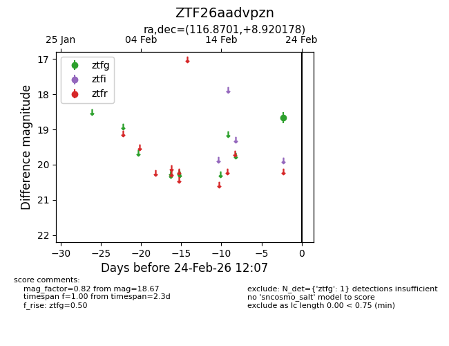
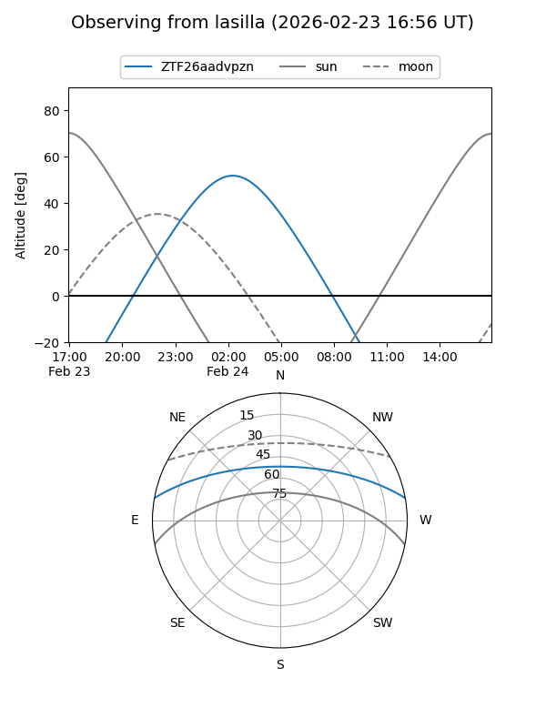
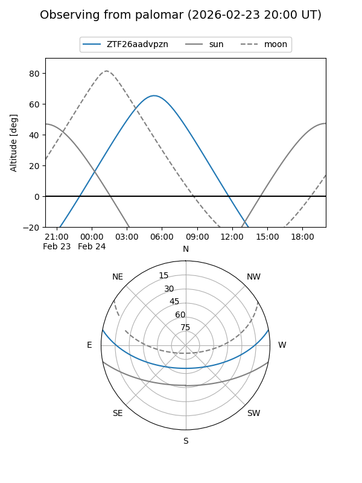

ZTF26aadvpzn
Target ZTF26aadvpzn at 2026-02-24 12:08
Aliases and brokers:
FINK: link
Lasair: link
ALeRCE: link
alt names
ZTF26aadvpzn (ztf,fink_ztf)
Coordinates:
equatorial (ra, dec) = 116.8701,+8.92018
equatorial (HMS+DMS) = 07:47:28.84,+08:55:12.64
galactic (l, b) = (211.2025,+16.47318)
Flags:
Photometry:
last ztfg=18.67
1 ztfg detections
Lightcurve

Visibility


Additional plots